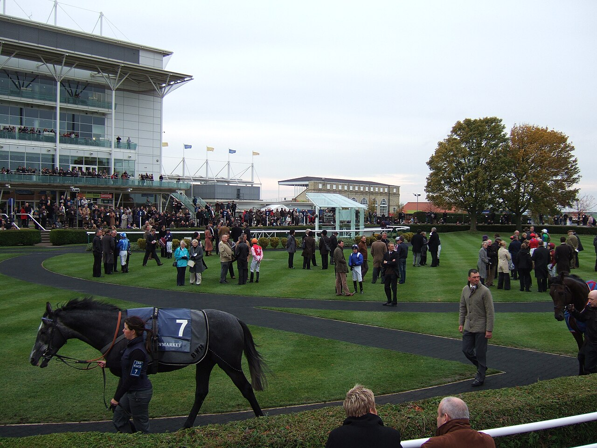

Tattersalls bate en Newmarket por tercer año seguido su récord anual de yearlings: 224 millones de guineas
La December Yearling Sale de Tattersalls cerró el lunes 23 de noviembre en Park Paddocks (Newmarket) con una recaudación de 6.097.000 guineas, la tercera vez en la historia de esta venta que supera los seis millones.

Con ella, la casa de subastas eleva su facturación anual en yearlings a 224 millones de guineas, récord por tercer año consecutivo.
Dos ejemplares compartieron el precio más alto, 260.000 guineas. El primero, un potro de New Bay presentado por Norelands Stud, fue para Clark Bloodstock. Es hijo de Sea Karats (Sea The Stars), segunda en las Pretty Polly Stakes (Listed) y hermana entera de Al Aasy, ganador de diez pruebas de grupo y segundo en la Coronation Cup (G1). Su media hermana Hoseki fue colocada el mes pasado en el Prix de Flore (G3) de Saint-Cloud.
El segundo fue una potra de Night of Thunder, de Ballyvolane Stud, que compraron a medias Ghrghar Stables, Ramzi Alghul y Johnny Hassett. Es el segundo producto de la yegua Tashoura (Fastnet Rock), de una familia criada por el Aga Khan. Estaba en el catálogo del Book 1 de octubre, pero se retiró porque enfermó. «Creo que es una buena compra. Si hoy mandas una yegua a ese semental, te costará mucho más», explicó Hassett, que prevé presentarla en una venta de breeze-up. Night of Thunder cubrirá en 2027 a 450.000 euros, la tarifa pública más alta de la historia en Europa.
Paddy Twomey pagó 210.000 guineas por una potra de Sea The Stars de Mountarmstrong Stud, media hermana de Swingalong, ganadora de las Lowther Stakes (G2). Catorce ejemplares superaron las 100.000 guineas, entre ellos un potro de la primera generación de Baaeed que Virtue Assets se llevó por 160.000.
Las cifras medias bajaron respecto a 2025: la recaudación cayó un 16 %, la media se quedó en 46.189 guineas (−12 %) y la mediana en 30.500 (−24 %). Se vendieron 132 de los 154 ejemplares presentados, un 86 %.
Tattersalls abrió este martes 24, a mediodía, la December Foal Sale, su venta de potros del año.
Por Martín Larrañeta